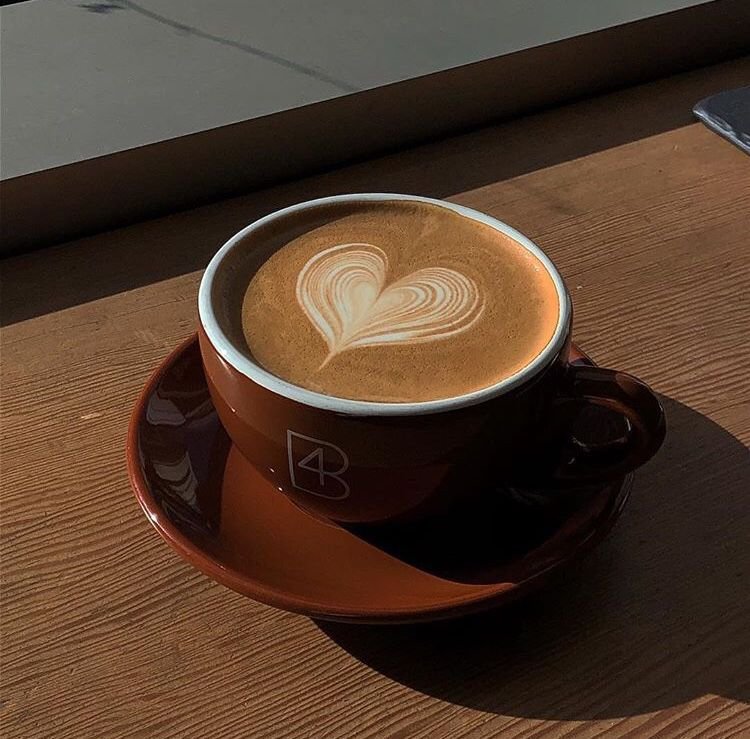
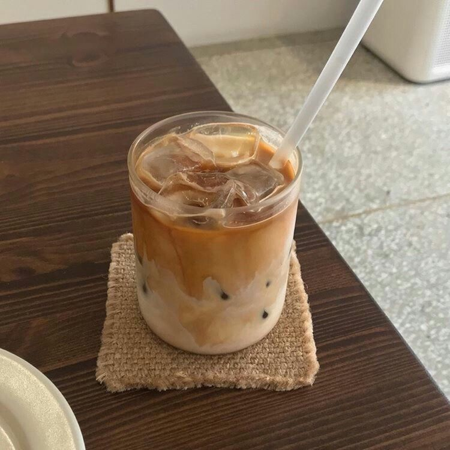
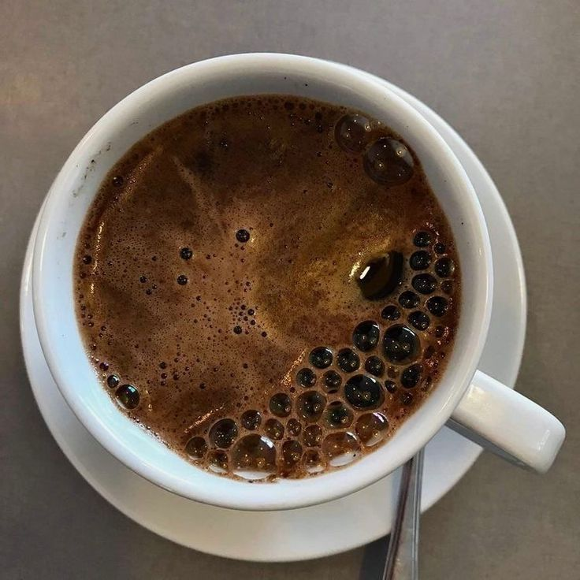
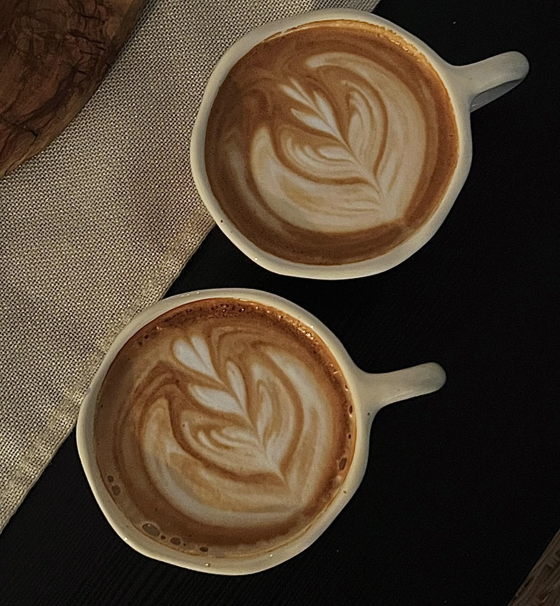

Koffie
Koffie is de enige ding dat me meestal wakker houdt tijdens de dag, niet is het alleen lekker maar het geeft me ook de nodige energie voor de drukke dagen dat ik vaak heb!
De geschiedenis van Koffie:
Koffie vindt zijn oorsprong in Ethiopië en werd rond de 15e eeuw populair in de Arabische wereld, waar het werd gedronken door monniken en verhandeld via handelsroutes. In de 17e eeuw bereikte het Europa en groeide het uit tot een geliefde drank en sociaal ritueel. Via koloniale plantages verspreidde koffie zich wereldwijd en werd het een van de meest gedronken dranken ter wereld.
bron - WikipediaVerschillende soorten koffie
Arabica-koffie werd vanuit Jemen door Nederlanders naar Java gebracht en daarna via Amsterdam wereldwijd verspreid, onder meer naar Europa, Amerika en Azië. Via koloniale netwerken en botanische tuinen bereikte de plant onder andere; Suriname en het Caraïbisch gebied. Tegenwoordig zijn Brazilië en Colombia de belangrijkste producenten.
Robusta-koffie is sterker, productiever en cafeïnerijker dan arabica, waardoor ze goedkoper te telen en populair voor koffiepoeder is. De soort werd al lang gebruikt door stammen in Oeganda en werd in 1900 wereldwijd verspreid nadat Lucien Linden planten vanuit Brussel naar Java stuurde. Belangrijke producenten zijn onder andere; Vietnam, Brazilië, Ivoorkust en Indonesië.
Liberica-koffie komt oorspronkelijk uit Liberia en Congo-Kinshasa en wordt vooral geteeld in Maleisië, West-Afrika en de Guyana’s. De soort is goed aangepast aan warme laaglandbossen en werd eind 19e eeuw in Indonesië aangeplant omdat ze ziekteresistent is. Ondanks grote bessen is de bonenkwaliteit lager, waardoor ze meestal lokaal wordt gedronken; rond de Tweede Wereldoorlog was Noorwegen de grootste afnemer van liberica uit Suriname.
Excelsa-koffie heeft een zure, fruitige smaak en wordt vaak gemengd met andere koffiesoorten. Ze vormt maar zo’n 2% van de wereldhandel en wordt botanisch gezien als een variëteit van Liberica, al wordt ze vaak nog als aparte soort behandeld. De teelt gebeurt vooral in Zuidoost-Azië, met name in Vietnam en de Filipijnen.



